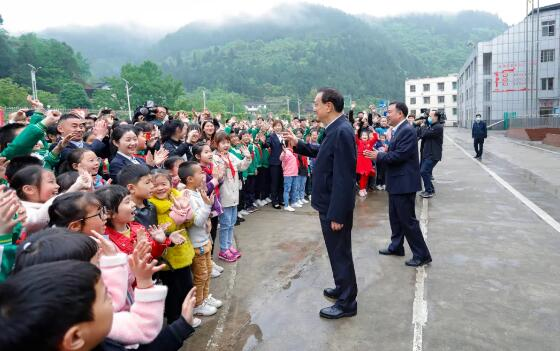

李克强：加强农村义务教育薄弱环节要重点放在教师上
“要突出加强农村义务教育薄弱环节这个事关全局的重点，采取有效措施缩小城乡、区域差距，促进教育公平。”李克强总理5月26日主持召开国务院常务会议时强调。
当天会议确定加强农村义务教育薄弱环节的措施。李克强指出，义务教育是关系每个家庭的最大公共产品，是政府的基本职责。要落实“双减”措施，提高义务教育教学水平和质量，推动义务教育均衡发展。

“学校和企业不一样，培养的是人才，人才是其主要‘产品’。这也就意味着，教师能力水平的高低是核心关键。”总理说，“加强农村义务教育薄弱环节要重点放在教师上。”
依法加强义务教育教师收入保障，多渠道解决好教师基本住房
李克强会上强调，要加强农村义务教育教师队伍建设。依法加强义务教育教师收入保障，多渠道解决好教师基本住房，建设必要的边远艰苦地区农村学校教师周转宿舍。
他要求，要加大在职培训、学历教育力度，提高义务教育教师素质。职称评定等要向中西部农村教师倾斜。
“要把有限的财政资金花在‘刀刃’上，重点用于保障义务教育教师的收入水平和生活条件改善，让他们能够拥有与职业相匹配的待遇。”李克强说。
让广大农村孩子出得来，有更通畅的上升通道
总理说：“要下大力气打牢义务教育基础，特别是加强农村义务教育薄弱环节，让广大农村孩子出得来，有更通畅的上升通道。”
当天会议决定，要持续改善农村基本办学条件，因地制宜加强农村学校教室、宿舍、食堂等设施建设。改善网络设施，促进优质教育资源开放共享。
会议要求，要强化经费保障。中央财政今年继续安排300亿元补助资金，重点支持中西部和东部部分困难地区义务教育发展。省级要加大统筹力度，强化对欠发达地区、民族地区、边境地区、革命老区义务教育的支持。


 意见反馈
意见反馈